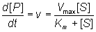

Enzyme Technology
Determination
of Vmax and Km
It is important to have as thorough
knowledge as is possible of the performance characteristics of enzymes, if they
are to be used most efficiently. The kinetic parameters Vmax,
Km and kcat/Km should, therefore, be determined.
There are two approaches to this problem using either the reaction progress
curve (integral method) or the initial rates of reaction (differential method).
Use of either method depends on prior knowledge of the mechanism for the
reaction and, at least approximately, the optimum conditions for the reaction.
If the mechanism is known and complex then the data must be reconciled to the
appropriate model (hypothesis), usually by use of a computer-aided analysis
involving a weighted least-squares fit. Many such computer programs are
currently available and, if not, the programming skill involved is usually
fairly low. If the mechanism is not known, initial attempts are usually made to
fit the data to the Michaelis-Menten kinetic model. Combining equations (1.1) and
(1.8),

(1.99)
which, on integration, using
the boundary condition that the product is absent at time zero and by
substituting [S] by ([S]0 - [P]), becomes
(1.100)
If the fractional conversion (X) is introduced,
where
(1.101)
then equation (1.100) may be simplified to give:
(1.102)
Use of equation (1.99)
involves the determination of the initial rate of reaction over a wide range of
substrate concentrations. The initial rates are used, so that [S] =
[S]0, the predetermined and accurately known substrate concentration
at the start of the reaction. Its use also ensures that there is no effect of
reaction reversibility or product inhibition which may affect the integral
method based on equation (1.102). Equation (1.99) can be utilised directly using a
computer program, involving a weighted least-squares fit, where the parameters
for determining the hyperbolic relationship between the initial rate of reaction
and initial substrate concentration (i.e., Km and Vmax) are
chosen in order to minimise the errors between the data and the model, and the
assumption is made that the errors inherent in the practically determined data
are normally distributed about their mean (error-free) value.
Alternatively the direct linear plot may be used (Figure
1.10). This is a powerful non-parametric statistical method which
depends upon the assumption that any errors in the experimentally derived data
are as likely to be positive (i.e., too high) as negative (i.e., too low). It is
common practice to show the data obtained by the above statistical methods on
one of three linearised plots, derived from equation (1.99) (Figure
1.11). Of
these, the double reciprocal plot is preferred to test for the qualitative
correctness of a proposed mechanism, and the Eadie-Hofstee plot is preferred for
discovering deviations from linearity.
Figure 1.10. The
direct linear plot. A plot of the initial rate of reaction against
the initial substrate concentration also showing the way estimates
can be directly made of the Km and Vmax. Every
pair of data points may be utilised to give a separate estimate
of these parameters (i.e., n(n-1)/2 estimates from n data points
with differing [S]0). These estimates are determined
from the intersections of lines passing through the (x,y) points
(-[S]0,0) and (0,v); each intersection forming a separate
estimate of Km and Vmax. The intersections
are separately ranked in order of increasing value of both Km
and Vmax and the median values taken as the best estimates
for these parameters. The error in these estimates can be simply
determined from sub-ranges of these estimates, the width of the
sub-range dependent on the accuracy required for the error and the
number of data points in the analysis. In this example there are
7 data points and, therefore, 21 estimates for both Km
and Vmax. The ranked list of the estimates for Km
(mM) is 0.98,1.65, 1.68, 1.70, 1.85, 1.87, 1.89, 1.91, 1.94, 1.96,
1.98, 1.99, 2.03, 2.06, 1.12, 2.16, 2.21, 2.25, 2.38, 2.40,
2.81, with a median value of 1.98 mM. The Km must lie
between the 4th (1.70 mM) and 18th (2.25 mM) estimate at a confidence
level of 97% (Cornish-Bowden et al., 1978). The list of the
estimates for Vmax (mM.min−1)
is ranked separately as 3.45, 3.59, 3.80, 3.85, 3.87, 3.89, 3.91,
3.94, 3.96, 3.96, 3.98, 4.01, 4.03, 4.05, 4.13, 4.14, 4.18,
4.26, 4.29, 4.35, with a median value of 3.98 mM.min−1.
The Vmax must lie between the 4th (3.85 mM.min−1)
and 18th (4.18 mM.min−1) estimate
at a confidence level of 97%. It can be seen that outlying estimates
have little or no influence on the results. This is a major advantage
over the least-squared statistical procedures where rogue data points
cause heavily biased effects.
Figure 1.11. Three ways in which the
hyperbolic relationship between the initial rate of reaction and the initial
substrate concentration
can be
rearranged to give linear plots. The examples are drawn using
Km = 2 mM and Vmax = 4 mM min−1.
(a) Lineweaver-Burk (double-reciprocal) plot of 1/v against 1/[S]0 giving
intercepts at 1/Vmax and -1/Km
(1.103)
(b) Eadie-Hofstee plot of v
against v/[S]0 giving intercepts at Vmax and
Vmax/Km
(1.104)
c) Hanes-Woolf (half-reciprocal) plot
of [S]0/v against [S]0 giving intercepts at
Km/Vmax and Km.
(1.105)
The progress curve of the reaction (Figure 1.12) can be
used to determine the specificity constant (kcat/Km) by
making use of the relationship between time of reaction and fractional
conversion (see equation (1.102). This has the advantage over the use of the
initial rates (above) in that fewer determinations need to be made, possibly
only one progress curve is necessary, and sometimes the initial rate of reaction
is rather difficult to determine due to its rapid decline. If only the early
part of the progress curve, or its derivative, is utilised in the analysis, this
procedure may even be used in cases where there is competitive inhibition by the
product, or where the reaction is reversible.
Figure 1.12. A
schematic plot showing the amount of product formed (productivity) against the
time of reaction, in a closed system. The specificity constant may be determined
by a weighted least-squared fit of the data to the relationship given by
equation (1.102).
The type of inhibition and the inhibition constants may be
determined from the effect of differing concentrations of inhibitor on the
apparent Km, Vmax and kcat/Km, although
some more specialised plots do exist (e.g., Cornish-Bowden,
1974).
Home
| Back | Next
This page was established in 2004 and last updated by Martin
Chaplin
on
6 August, 2014
|